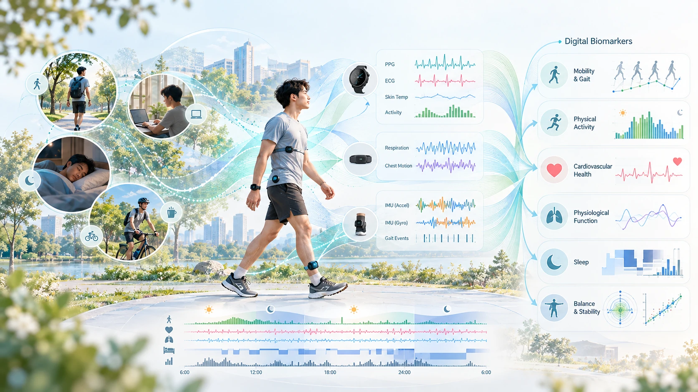

REAL-WORLD DIGITAL HEALTH
Wearable Sensing &
Digital Biomarkers
Enabling continuous and objective health assessment beyond the clinic.

Our research explores how wearable and mobile sensing technologies can capture physiological and behavioral information in everyday life. By integrating inertial sensors, smartwatches, and other sensing modalities, we develop approaches for monitoring physical activity, mobility, and health-related behaviors beyond conventional clinical environments.
A major focus is the development of digital biomarkers that translate continuous sensor measurements into objective and clinically meaningful indicators of health and functional status. Our work addresses challenges associated with real-world data collection, including variations in daily activities, sensor placement, data quality, and individual differences.
Through clinical collaborations, we investigate how wearable-derived measures can complement conventional assessments, characterize physical function, and support longitudinal monitoring of health-related changes in free-living environments.